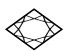
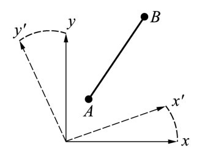
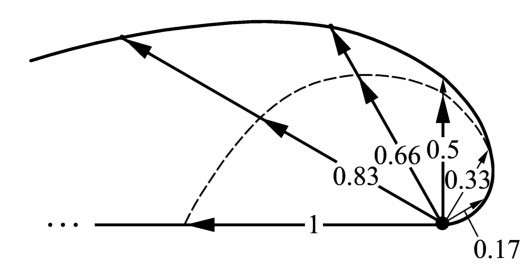
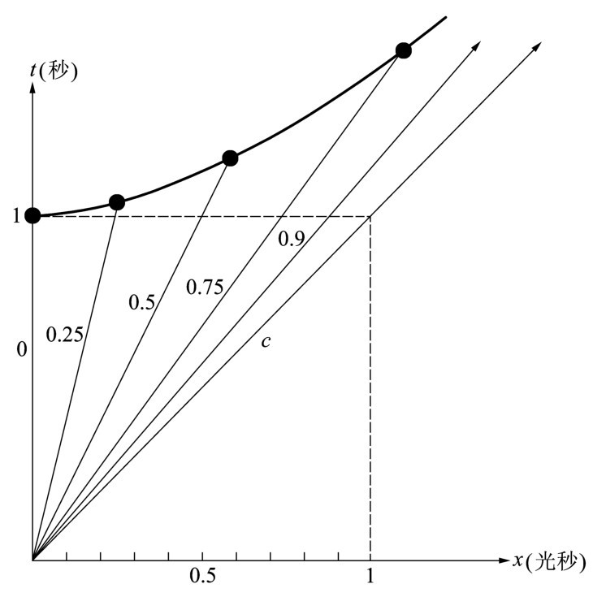
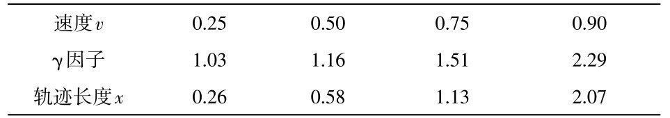
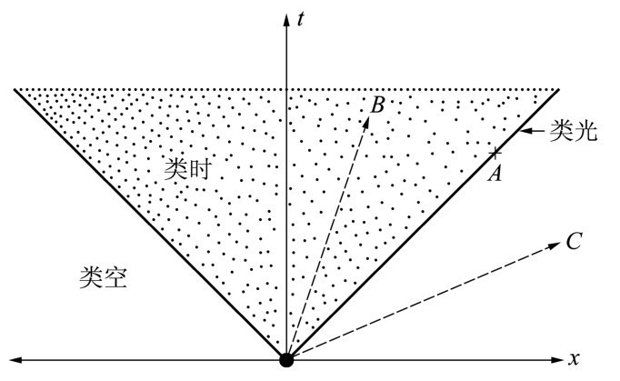

第十三章午餐之后我们静静地坐了一会儿。爱因斯坦心不在焉地搅和着他的茶，看着茶叶重新聚集在杯子中央。最后，牛顿开口说话了。
牛顿： 太奇怪了，γ因子在时间方面表示标度的延展，每个时间间隔成比例地变长了；但在空间方面，相同的因子却使空间间隔变短了——我们是除以而不是乘以γ。如果我把使时间延缓和空间收缩的两个因子乘在一起，我得到的是γ因子除以γ因子——也就是说，1。
爱因斯坦 （有点不耐烦）：那根本不奇怪。它只不过是光速普适性的结果。否则的话，光速将在某种程度上依赖于观察者。

图13.1 两点A 与B 之间的距离不依赖于描述它的坐标系。它可以由x 和y 坐标确定，或如图显示的那样由相对于｛x，y ｝集转动而得到的x ′与y ′坐标系来确定。
牛顿： 我明白这一点，爱因斯坦。但我觉得问题并不这么简单。假如这两个因子的乘积始终为1，那将意味着当观察者改变他的运动状态时空间和时间都不再保持不变，而第三个量却保持恒定。你们知道，在写《原理》一书时我对空间思考了很多。使我印象深刻的事实是，定义一个物体在空间的位置强烈依赖于所使用的坐标系，但是一段距离的长短则不依赖于坐标系。两点A 和B 之间的距离l （见图13.1）与坐标系无关，其平方的数学表达式为
l 2 =（xA -xB ）2 +（yA -yB ）2 +（zA -zB ）2 .
［xA 为点A 的x 坐标；等等。］我可以随意移动我的坐标系，但长度l ，说得更确切一点，它的平方l 2 ，将不会改变；它是恒定的。以此类推，距离的大小不依赖于观察者的运动状态。
但在相对论里整个图像都变了。我们已经知道了空间两点之间的长度l 不是一个绝对量，而是依赖于观察者的运动状态。两个事件之间的时间差也如此。然而，我认为你的理论含有某一确定的量，它其实始终不变——即便观察者的位置或坐标系的位置真的改变了。
爱因斯坦 （朝牛顿投去欣赏的目光）：艾萨克爵士，你的思路又对头了。在相对论里的确存在某种不变量，当你从一个参考系变换到另一个参考系时，它对于所有观察者而言都是一样的。我就从另一个小的思想实验入手吧。让我们回到当初解释时间延缓时所采用的那些假想的寿命为1秒的粒子。我将假设我拥有能从某一太空站射入空间的粒子，我可以选择我喜欢的任何速度，唯一的限制就是此速度应该小于光速。
粒子在发射后1秒整衰变掉了，即它们的寿命为1秒。以此方式衡量它们的寿命仅仅在粒子本身的参考系——也就是说，在随粒子一同运动的坐标系——中是正确的。从另一方面来说，在宇宙飞船的静止参考系里，时间延缓使得发射出去的粒子存活得长一些。它的寿命在那个参考系里等于1秒乘以γ因子。
爱因斯坦取一张纸开始勾勒从宇宙飞船发射的粒子的不同轨迹（见图13.2）。他解释了他的草图，继续演讲起来。

图13.2 一艘宇宙飞船朝各个方向发射寿命为1秒的粒子。在我们的例子中，这些粒子的速度随着发射方向从右到左地增大；对它们的标记以光速为单位，对应相关的箭头。（比方说，标数0.5的箭头代表以150 000千米每秒的速度飞行的粒子。）如果没有时间延缓的话，发射点与衰变点之间的距离是速度与寿命的乘积；用粗箭头表示这些距离，箭头的包络线用虚线连成螺线状。如果粒子以精确等于光速的速度发射，它们的轨迹长度将刚好为1光秒（见标数为1的箭头）。时间延缓使得从发射到衰变的轨迹被γ因子增大。这一点由加长的箭头标出，箭头的包络线呈实螺线状。这里无法达到光速极限——那将导致无穷长的轨迹。（注意，这里采用的假想粒子的寿命是经典寿命；也就是说，衰变刚好发生在粒子的存活时间消逝之后。为了简单起见，我们已经忽略了该描述与量子理论不相符的事实，后者只能给出衰变的概率。）
爱因斯坦： 显然，粒子轨迹的长度依赖于它们的初始速度。如果轨迹长度为零，粒子刚好停留在原点并且在1秒之后衰变——它根本不飞行。眼下有趣的是，在一个时空图里考虑各种速度，为了简单起见，我们取空间仅有一维；我们把它称为x 轴，忽略其他的空间维度。
爱因斯坦取来另一张纸，画出一个时空坐标系（见图13.3）。

图13.3 时空坐标系，其中牛顿加入了几个寿命为1秒的粒子的世界线。对于静止的粒子，世界线沿着时间轴从它的产生事件点（原点）跑到它的衰变事件点，即x =0，t =1秒之处。在不存在时间延缓的情况下，对于各种运动状态的粒子，所有衰变点都出现在t =1秒的虚线上。时间延缓使得它们改而沿着曲线或双曲线出现。各条世界线对应于表中所列的各种情形。
爱因斯坦： 在这个系统里面，我现在加入仅有的两个对寿命为1秒的粒子而言至关重要的事件——粒子的产生和衰变。由于粒子在它们短暂的生存期间内是沿着直线匀速地穿越空间，因此相应的世界线在我们的时空坐标系里将是直线。
牛顿从爱因斯坦手中拿过铅笔，开始在草图上画些世界线。
牛顿： 假设我把你的时空坐标系的原点解释为粒子产生的事件。假设所产生的粒子的速度为零，因此该粒子将始终停留在x =0的空间点上；它的世界线将简单地表现为一条直线，从原点出发沿着时间轴移动到t =1秒的地方。现在我们来看其他几种情况。哈勒尔，你没有小型的自动计算器吗？何不计算一下几种初始速度情况下的轨迹长度呢？
我拿出我的袖珍计算器并算出下表：

这个表格列出了以光速为单位的粒子速度、相应的γ因子和粒子在衰变之前的轨迹长度。轨迹长度是由速度乘以γ因子得到的，因为假设了粒子的寿命刚好为1秒。度量轨迹长度的单位为光秒。因而0.26光秒=0.26×300 000千米=78 000千米。
牛顿此刻把各种粒子的世界线画入时空图之中。他标记了几个点，用一条手工曲线将它们连在一起，并出神地注视着此图。
牛顿： 由于这些粒子的寿命在它们自己的静止系里刚好为1秒，因此它们的实际寿命在观察者的参考系里由γ因子给出，即t =γ秒。哈勒尔教授，请你就你的表格中所列的数值计算一下（t 2 -x 2 ）的大小好吗？
我自然明白牛顿的意思。我依从他的要求算出
（1.032）2 -（0.262）2 =0.996
（1.162）2 -（0.582）2 =1.012
（1.512）2 -（1.133）2 =1.002
爱因斯坦 （插进来）：牛顿，我认为哈勒尔不需要去做计算。结果是显然的。你所要的衰变事件的时空坐标的平方差t -x ，是一个常量；在我们的例子里这个常数等于1。至于哈勒尔的计算器没有产生出恰好为1的数值，只不过是由于舍尾误差造成的。
牛顿： 当我开始在时空图上画曲线时，我意识到了这个规律性。我在研究行星运动时已经见过很多类似的曲线。还是让我来精确计算那个差值吧。它等于
t 2 -x 2 =γ2 -（v γ）2 =γ2 （1-v 2 ）=1，
因为γ因子的平方即为1/（1-v 2 ）。这里v 是所考虑的粒子速度，以光速为单位；所以v 是个纯粹的数字。
牛顿朝我们眉开眼笑，他显然轻松了。于是他接着说下去。
牛顿： 爱因斯坦，你真应该从一开始就挑明，当我们考虑时空事件时问题其实有多简单。我想我们应该给你的相对论取个新名字：绝对论。物理学中重要的是那种绝对有效的、不依赖于观察者立场的量或规律性。而时间坐标与空间坐标的平方差恰恰是我们已经发现了的绝对不变量。这个量对所有的观察者来说都是一样的。它是绝对的，它是一个时空不变量。我们面临奇特的时间延缓与空间收缩现象是理所当然的。每一现象只为达到一个目的，即无论如何要保证t 2 与x 2 之差为常量。相对论真该死！绝对论万岁！忘掉空间，忘掉时间——从现在起让我们把它们二者相提并论，称做时空；让我们只关注不依赖于观察者的量，即时间与空间的平方差。
不论是爱因斯坦还是我都从未见过牛顿这么开心。显然他已经转变成相对论的忠实信徒。
爱因斯坦： 我不反对你为相对论改名，起先我自己也不喜欢这个名字。可是，我怕改名已经太晚了，所以我们最好随它去吧。不过我赞同从现在起我们应该将空间和时间合二为一，统称为时空。顺便说一下，这个提议其实并非我本人的。我以前在苏黎世的数学教授闵可夫斯基（Hermann Minkowski）在德国格丁根大学授课时，即在我的论文发表3年之后，就有过这样的提议了。
现在还是回到我们的问题上来。把平方差t 2 -x 2 写为（ct ）2 -x 2 要更准确些。每当我们不用光秒而是以米或千米等常用单位测量空间时，要明确地提及光速c 。而我们现在把3个空间坐标全都考虑进来。那么我们讨论过的平方差将体现为下式：
（ct ）2 -（x 2 +y 2 +z 2 ）.
这样当我们从一个参考系换到另一个相对于前者运动的参考系时，就能看清实际发生的过程。我们已经知道，在这种情况下时间流以及距离长度都改变了。可以认为空间和时间在某种程度上相互轮换。在这一过程中不变的量是空间与时间的平方差。
这使我们想起空间坐标系的转动：转动会改变单个点的坐标，但是将保持任意两点之间的距离不变。牛顿，这一点你已经给我们指出来了。
如果我们把轨迹长度，或者更确切地说它的平方，用时间与长度的平方差代替，我们就踏踏实实地处于相对论之中了。因此，从一个静止的参考系变换到一个快速运动的参考系可以被看作时空的准转动，我们所定义的平方差在这样的转动下保持不变。
两个事件的时间与空间的平方差是唯一的绝对量并且不随观察者的状态而变化，这一点并不那么令人吃惊。让我们看另一个时空示意图。
爱因斯坦出示并评论另一个新的示意图（见图13.4）。他谈及了时空中那些相对的被他称做类光（lightlike）、类时（timelike）或类空（spacelike）的事件。

图13.4 含有一个空间坐标轴的时空示意图。在t
-x
平面上的每个点代表一个事件。全部事件可以通过与从原点发出的光信号比较而分为3组：其世界线由自原点以45°角延伸的两条直线组成。这个角度的产生是由于我们在空间以光秒为单位来测量距离。
表示光信号的两条直线构成光锥，它们包含所有平方差（ct
）2
-x
2
为零的事件。因而它们也被称做类光事件，如图中点A
所示。光锥之内的事件（点状区域）对应于上述平方差的正值，比如点B
或沿时间轴本身的任意点。这些事件叫做类时事件。其余的事件处于光锥之外，例如点C
，是由时间和空间坐标的平方差取负值来区分的。它们包括了处在空间坐标轴上的事件，被称做类空事件。
爱因斯坦： 你们看到，时间与空间的平方差对于那些可以从原点通过光信号够得着的事件来说为零；我们称这些事件相互之间是类光的。倘若我从地球向月球发射激光束，那么由信号的发射与信号的到达所定义的两个事件彼此是类光的。这一点不依赖于观察者的状态；我们知道，当我们转换到另一个参考系时，时间和空间的平方差并不改变。身处宇宙飞船快速经过地球的观察者观察从地球到月球的激光信号的径迹，他会观察到这两个事件是彼此类光的，如同我们坐在地球上观察到的那样。这是光速普适性的直接推论。
牛顿： 我明白。如果没有这一普适性的话，区分事件相互之间是类光的、类时的还是类空的就没什么意义了。
爱因斯坦： 我给你们举另外一个例子：考虑发生在地球这里的一个事件，比如耶稣（Christ）诞生于公元0年 [1] ；另一个事件，比如织女星（距地球26光年）的行星上一座火山于公元30年爆发。差值（ct ）2 -l 2 由302 -262 =152 给出，它是类时的。这一差值不依赖于参考系。倘若一个宇航员在快速飞行的宇宙飞船中记录下了这两个事件，在他的参考系里这个差值会是一样的。
假设宇航员刚好在耶稣诞生时驾驶飞船经过地球飞往织女星，并假设刚好在火山爆发时到达织女星。由于两地的距离为26光年，宇航员为了准时到达那里，不得不以接近光速的速度飞行。我们可以立即说出宇航员乘坐飞船从地球到织女星的行星所花的时间。在他的参考系里，两个事件的空间距离为零，因为在耶稣诞生时他在地球近旁；而当火山爆发时，他处在织女星的区域。两个事件的时间间隔当然不为零，我们在上面算出它大约是15年。这意味着宇航员从织女星旁边飞驰而过时他已老了15年。
牛顿 （赞许地点点头）：爱因斯坦先生，即使在你的理论里面也并非什么都是相对的，这一点令我感到高兴。既然我们已经从中看到了一个绝对的量，即时间与空间的平方差，我确信你的理论是对的。然而，那个量实在不寻常。在我所处的时代，有谁会想到这个平方差将在物理学中扮演重要角色呢？无疑我没有想到，无疑莱布尼茨（Leibniz）没有想到，其他人就更想不到了。
哈勒尔： 时间和空间的平方差不仅意味着空间和时间的合二为一，也显示出两者间的一个重要区别。我们涉及的是一个差，而不是一个和。倘若我们定义了平方和为不变量，我们就能谈及时间和空间的真正统一了。可是，这儿的情形并非如此。尽管观察者运动状态的改变会使时间和空间混淆，然而在任何参考系里面，空间和时间之间仍存在一个基本的差异，我们已经看到了这差异如何导致时间延缓与空间收缩现象。这一差异就表现在两个平方项之间的减号上。当我们方才说时空并非含有4个坐标轴而是（3+1）个——3个空间轴和1个时间轴——的时候，就暗示了这一点。
牛顿： 多么不寻常的结构！爱因斯坦，为什么会是这样？为什么时空的内在结构是由这个奇怪的差定义的？哈勒尔，你怎么看？你觉得那有意义吗？
哈勒尔： 艾萨克爵士，你对我的要求可真不少。到目前为止，没有人知道为什么空间有3维而时间只有1维，也没有人明白为什么空间和时间是由相对论联系起来。唯一确定无疑的是我们能够从简单的事实，比如普适的光速，推导出空间和时间的基本性质。仅此而已。
即使在今天，科学也远远不能对这些问题给出答案。有时对我来说不可思议的是，我们甚至会问关于时间和空间的基本结构的问题。我们的世界似乎是以一种比我们根据日常经验所能猜想到的更简单的方式装配起来的。创造的蓝图似乎在某种程度上正通过空间和时间的基本结构闪现出来。它们表明某种简单性和对称性——虽然这些量绝不容易解读。我的理论物理学同行之一惠勒（John Wheeler）曾经说过，任何时候我们若想设法确定宇宙的规律，包括那些支配空间和时间的规律，我们就会惊讶于它们从一开始就并非不证自明的；发现简单的真理是如此的困难。
爱因斯坦 （已经点着了一支雪茄）：牛顿，我一直以为你是个天才的实用主义者。据我所知，你从来没有问过你所发现的不寻常的质量的万有引力定律来自何处——在你的书中你肯定没有提出这个问题。还记得你的假说不等于事实 （hypotheses non fingo ）的声明吗？
我建议我们忠于你的原则而不试图解释时间和空间结构的根本起源。让我们把它当作已知的事物来接受，转而专注于确定它的后果。还有很多后果我们没有讨论到，其中包括与物质的动力学性质相关的现象；依我看来，那才是我们发现一些相对论最有趣最有益的推论之所在。
哈勒尔： 我完全同意。在我们关于相对论的讨论中，我们已经到了非得讨论物质不可之处。从一开始我就计划在欧洲核子研究中心举行一些讨论，所以现在也许是结束我们在伯尔尼的学术会议、前往日内瓦的好机会。我已经做了安排。如果你们不介意的话，我愿意把旅行的细节设计出来。
时间已是午后了。明天恰好是星期日，大家同意一早乘我的车去日内瓦。我已经在CERN的旅馆预订了三个房间。
注解：
[1] 实际指的是公元1年。——译者